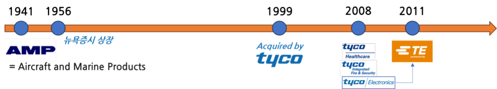
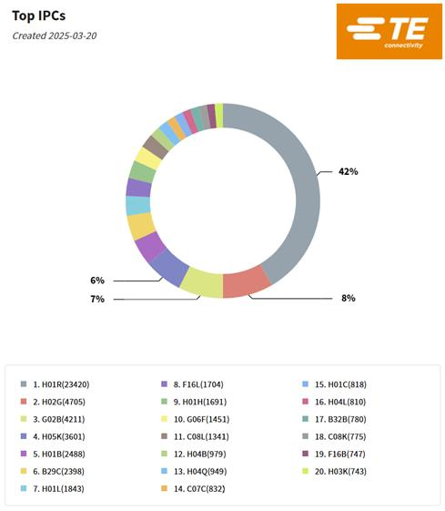
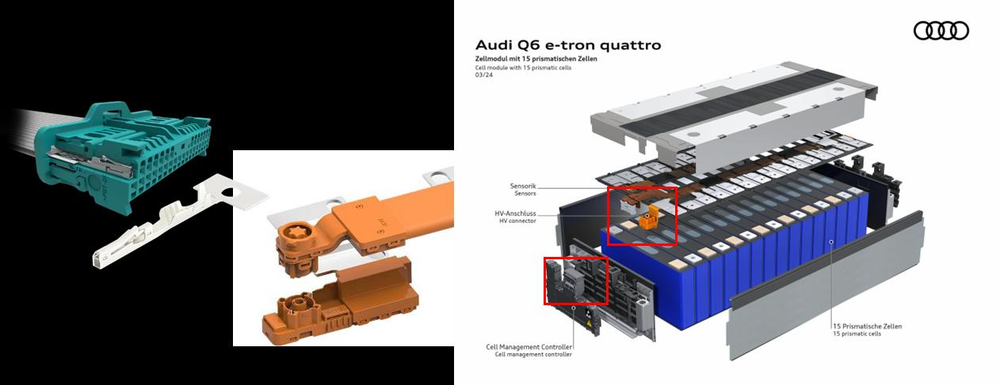
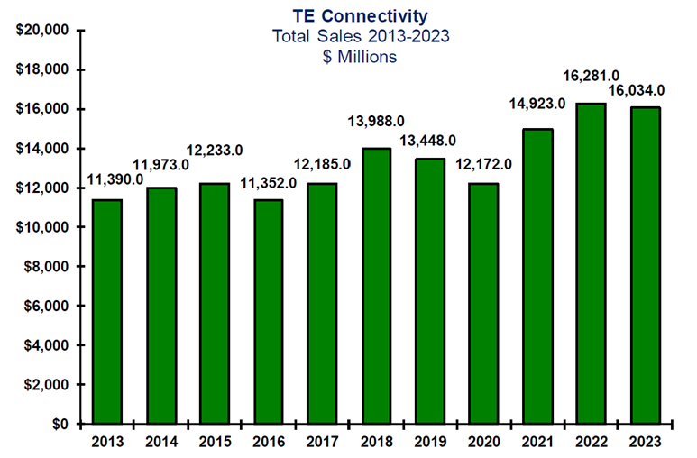

Commodity components are relatively easy to imitate and hard to differentiate, so price competition is fierce. Even so, TE Connectivity, the global leader in connectors, has held the world's leading market position for more than 50 years in that competitive environment while achieving an operating margin of around 15%. Drawing on Teece's (1986) appropriability regime and Fujimoto's (2007) architecture-based comparative advantage, this study analyses the factors behind TE's long-term market leadership across three dimensions: patents, standards and positioning.
- The study analyses the factors behind the long-term market leadership of TE Connectivity, global leader in commodity components, from the perspective of the appropriability regime — patents, standards and positioning — drawing on Teece (1986) and Fujimoto (2007).
- TE built a differentiated appropriability regime through a patent portfolio three to four times the size of its competitors', early participation in standards activity, and a strategy of concentrating on high-growth, high-margin areas.
- These strategies produced an operating margin of around 15% and stable growth.
- For Korean materials, parts and equipment firms, the case underlines the importance of a strategy of "win first, then fight" and of responding to intensifying competition.
- Responding to future industrial change and the technology environment in particular requires building an integrated appropriability regime in which patents, standards and positioning are organically combined.
1. Introduction
Korea's materials, parts and equipment industry is led by the parts segment, which accounts for 60% of establishments, employees, output and value added, and which grew more than 6% a year on average between 2001 and 2020, playing a central role in manufacturing and exports. In 2022 the parts segment recorded exports of USD 234.26 billion against imports of USD 152.42 billion, a trade surplus of USD 81.84 billion. In commodity components, however, it faces a double bind: rapid pursuit by latecomers such as China and a technology gap with advanced economies. Commodity components such as connectors are growing more important as future core industries — electric vehicles, autonomous vehicles, data centres — expand, so examining the sources of long-term leadership at a firm that has held the leading position in the global commodity component industry can offer meaningful lessons for Korean firms in the sector.
2. Research overview
2.1 The case company
Founded in 1941, TE Connectivity is an American company with some 85 years of history, a leading technology firm that designs, manufactures and distributes connectors and sensors used across automotive, industrial equipment, data communications, aerospace, defence and medical industries. As of 2023 it recorded annual revenue of about USD 16 billion (roughly KRW 22.4 trillion) with a market capitalisation of about USD 45 billion, and employs some 89,000 people across 140 countries. Its business divides into Transportation (59.8%), Industrial (28.4%) and Communication (11.8%). Starting as AMP (Aircraft and Marine Products) in 1941, it was acquired by Tyco International in 1999, became independent through a spin-off in 2007 and adopted its present name in 2011. It has extended its technological capability through strategic M&A including Deutsch Group (2008), ADC Telecommunications (2010, about USD 1.25 billion), Measurement Specialties (2014, about USD 1.5 billion) and First Sensor (2020).

3. Business analysis: defining connectors, and their market, technology and industry
A connector is defined as "an electronic component that provides an electrical and mechanical connection enabling the transmission of signals, power or data while allowing connection and disconnection as required," and was the key element that made possible the modular architecture innovation epitomised by the PC. According to Bishop & Associates, the global connector market was worth about USD 81.9 billion in 2023 and is projected to grow 6.7% a year to about USD 119.5 billion by 2029. By field, communications and data (23.2%) and automotive (22.6%) hold the largest shares, and the number of connectors per vehicle in an EV runs up to more than twice that of an internal combustion vehicle.
Structurally, the connector industry has an HHI of 739.06 — formally a competitive market, but with the character of a differentiated competitive market in which limited monopoly power can be exercised through product differentiation. TE leads the industry with 15.57% share, followed by Amphenol (11.84%), APTIV (5.76%) and Molex (5.67%). In Utterback and Abernathy's model the industry sits in the cost-minimising/systematic phase, where process innovation has overtaken product innovation following the establishment of a dominant design; in Pavitt's classification it is a production-intensive industry in which process know-how and tacit knowledge matter more than patents as appropriability mechanisms. Technically, connectors have a dual character of modularity and integrality, and terminal and header connectors are somewhat more integral, so architectural knowledge and design know-how differentiated by manufacturer matter.
4. Theoretical background
4.1 The appropriability regime
Teece (1986) defined the appropriability regime as the legal and structural conditions under which a firm can capture the value of an innovation and protect it from imitation. Capturing value from innovation rests on a combination of three elements: ① building a strong appropriability regime through intellectual property such as patents; ② leading market standards by owning the dominant design; and ③ securing complementary assets such as manufacturing, marketing and after-sales service. In environments where the appropriability regime is weak — as with commodity components — complementary assets such as customer-specific design capability, a global manufacturing network and quality management systems become sources of competitive advantage that are hard to imitate.
4.2 Architecture-based comparative advantage and positioning
Fujimoto (2007) argued that a firm's competitive advantage arises from the dynamic fit between organisational capability and product architecture. German and Japanese firms generally take a capability-centred strategy and American firms a positioning-centred approach, but TE, though American, combines capability and positioning in a distinctive balance. A dynamic co-evolutionary mechanism — organisational capability leading to production performance, production performance to market performance and market performance to profit — explains TE's virtuous cycle.
5. Case analysis and findings
5.1 Patents
Analysis of registered patents in the Derwent Innovation database shows TE holding 159,152 individual patent records and 55,587 DWPI families — more than four times the scale of Amphenol (36,671 / 13,039) and Molex (32,964 / 11,548). In IPC class H01R (electrically conductive connections), the core of connector technology, TE holds 23,420 patents, more than three times Amphenol's 6,155 and Molex's 7,347. Qualitatively too, its 40,611 forward citations are about 3.5 times Amphenol's 11,187 and Molex's 10,687, and it holds many highly cited patents that have become industry-standard technologies, such as "Mounting socket for memory card and SIM card" (622 citations) and "Impedance matched backplane connector" (455 citations). TE was named to Clarivate's Top 100 Global Innovators in 2025 for the twelfth consecutive year, recognition of sustained innovation capability.

5.2 Standards: establishing the dominant design
Connector standards divide into closed (non-standardised) areas, where firms build entry barriers with proprietary technology, and open (standardised) areas guaranteeing interoperability among manufacturers. TE manages the balance between the two strategically and has participated actively in forming industry standards, taking approaches suited to each industry: de facto standards in data and communications, consensus standards in automotive, and de jure standards in industrial applications.
A leading example of pre-empting a de facto standard is the SPE (Single Pair Ethernet) communication connector. TE pre-empted this next-generation connection standard, which simplifies conventional four-pair, eight-pin Ethernet to a single pair (two pins) and cuts cable and connector size by 60%, and worked with the PROFIBUS Nutzerorganisation (PNO) to play a central role in developing a unified connector system for PROFINET over SPE. An example of pre-empting a consensus standard is its "spec-in" strategy: TE worked closely with the OEM from the design stage of the Volkswagen/Audi Group's EV battery systems to have its NanoMQS and BCON+ connectors written into the specification, building a position and bargaining power as a solution provider rather than a mere component supplier.

5.3 Positioning: delivering differentiated value and securing strategic position
TE's positioning strategy is captured in the direction of "securing advantage through selection and focus." By product type, it concentrates its portfolio on the largest segments — PCB (31.5% of the market), I/O rectangular (14.0%) and application specific (18.7%) — and leads each with shares of 19.9%, 21.3% and 20.1% respectively. By application method it concentrates on wire-to-board, technically demanding with strong resistance to substitutes and therefore supplier-led, building high value added and barriers to entry. By application field, where competitor Amphenol concentrates on telecom/datacom and military/aerospace, TE puts 62.0% of its portfolio into automotive and leads with 42.7% share — a strategy of avoiding competition and concentrating on high-value, B2C-related industries where high reliability and premium pricing are possible. Regionally it ranks first or second in all three major markets — China (11.1%, first), Europe (26.5%, first) and North America (16.5%, second) — securing a revenue structure resilient to global economic cycles.
6. Conclusion
Business performance
TE's revenue grew 34% over ten years, from about USD 12 billion in 2013 to about USD 16 billion in 2023 (a CAGR of about 2.8%), and its operating margin of around 15% of revenue is exceptional for a low-margin commodity component business. Its share price has risen more than threefold since 2008. R&D investment of about USD 715 million in 2023 (about 4.8% of revenue) produced more than 15,000 newly registered and filed patents and a global network of more than 8,000 engineers, and new products account for about 20% of total revenue — evidence of a working virtuous cycle between technology development and commercialisation.

TE Connectivity secured differentiated competitiveness by building an integrated appropriability regime in which three core elements — patents, standards and positioning, all concentrated on areas of high market weight, growth potential and profitability — are organically combined. Industry data show the connector industry's competitive structure changing, with the top ten firms' combined share falling from a peak of 60.8% in 2020 to 52.6% in 2023, so differentiation strategy is called for among Korean materials, parts and equipment firms as well.
- An integrated appropriability regime: A patent portfolio three to four times competitors' established technological advantage and barriers to entry; participation from the earliest stage of standards activity achieved standard pre-emption through spec-in; and complementary assets — R&D investment of about 4.8% of revenue and a global production network — expanded technology commercialisation. The organic combination of these three elements is the source of 50 years of leadership.
- The strategy of "win first, then fight": Korean materials, parts and equipment firms pursuing fast follower strategies need an approach that secures competitive advantage before entering the market, through ① concentrated R&D investment in core technology areas, ② building a differentiated product portfolio, and ③ strengthening strategic positioning within the value chain.
- Responding to intensifying competition: Amid structural change — falling shares for leading firms and encroachment by new entrants and upstream suppliers — responding through product innovation, standard pre-emption and concentration on high-value areas matters.
- Limitations: Quantitative patent measures do not fully reflect qualitative value, and as a single-firm case the study lacks verification of how far its lessons apply to resource-constrained SMEs and start-ups.